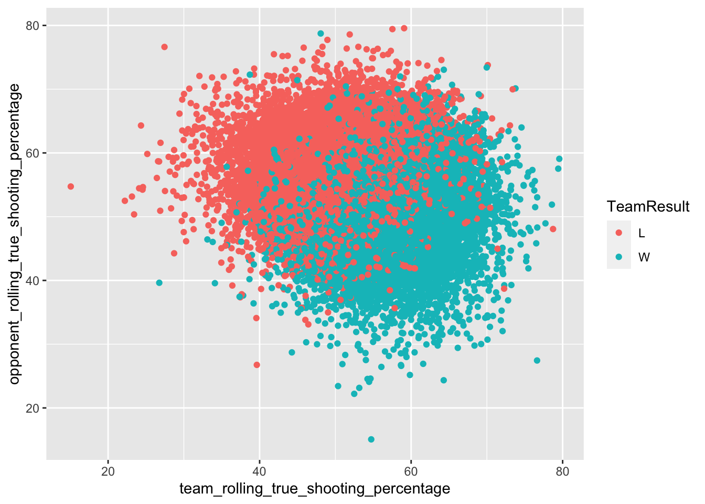
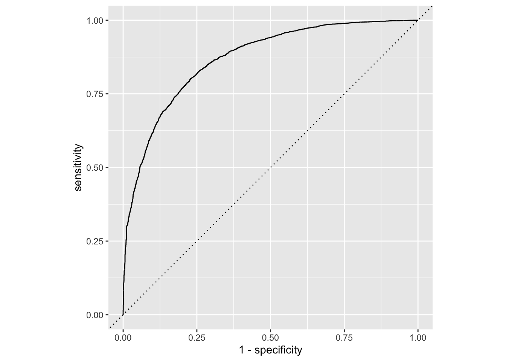

Chapter 6 Logistic Regression
Up to this point, we’ve been dealing with problems that lead to a quantitative answer: We want a number. How many points? How many possessions? But there are lots of problems in the world where the answer is a classification: Did they win or lose? Did the player get drafted or no? Is this player a flight risk to transfer or not?
These are problems of classification and they use many of the same algorithms we’ve used to try and predict those classes.
Ultimately, the algorithms will predict the probability that this row is X or Y and make a decision based on that probability. That probability will be somewhere between 0 and 1, with 0 being no chance and 1 being a sure thing.
Where this gets interesting is in the middle.
library(tidyverse)
library(tidymodels)
library(zoo)
library(hoopR)
set.seed(1234)What we need to do here is get both sides of the game. We’ll start with getting the box scores.
teamgames <- load_mbb_team_box(seasons = 2015:2022) %>%
separate(field_goals_made_field_goals_attempted, into = c("field_goals_made","field_goals_attempted")) %>%
separate(three_point_field_goals_made_three_point_field_goals_attempted, into = c("three_point_field_goals_made","three_point_field_goals_attempted")) %>%
separate(free_throws_made_free_throws_attempted, into = c("free_throws_made","free_throws_attempted")) %>%
mutate_at(12:34, as.numeric)Now we’ll create the team side of the game.
teamstats <- teamgames %>%
group_by(team_short_display_name) %>%
mutate(
team_score = ((field_goals_made-three_point_field_goals_made) * 2) + (three_point_field_goals_made*3) + free_throws_made,
true_shooting_percentage = (team_score / (2*(field_goals_attempted + (.44 * free_throws_attempted)))) * 100,
turnover_pct = turnovers/(field_goals_attempted + 0.44 * free_throws_attempted + turnovers),
free_throw_factor = free_throws_made/field_goals_attempted,
team_rolling_true_shooting_percentage = rollmean(lag(true_shooting_percentage, n=1), k=2, fill=true_shooting_percentage),
team_rolling_turnover_percentage = rollmean(lag(turnover_pct, n=1), k=2, fill=turnover_pct),
team_rolling_free_throw_factor = rollmean(lag(free_throw_factor, n=1), k=2, fill=free_throw_factor),
) %>% ungroup()
opponent <- teamstats %>% select(game_id, team_id, offensive_rebounds, defensive_rebounds) %>% rename(opponent_id=team_id, opponent_offensive_rebounds = offensive_rebounds, opponent_defensive_rebounds=defensive_rebounds) %>% mutate(opponent_id = as.numeric(opponent_id))
newteamstats <- teamstats %>%
inner_join(opponent) %>%
mutate(
orb = offensive_rebounds / (offensive_rebounds + opponent_defensive_rebounds),
drb = defensive_rebounds / (opponent_offensive_rebounds + defensive_rebounds),
team_rolling_orb = rollmean(lag(orb, n=1), k=2, fill=orb),
team_rolling_drb = rollmean(lag(drb, n=1), k=2, fill=drb)
)## Joining, by = c("opponent_id", "game_id")team_side <- newteamstats %>%
select(game_id, team_id, team_short_display_name, opponent_id, game_date, season, team_score, team_rolling_true_shooting_percentage, team_rolling_free_throw_factor, team_rolling_turnover_percentage, team_rolling_orb, team_rolling_drb) %>% na.omit()Now we’ll use use the same dataframe and rename some columns to create the opponent side of the game.
opponent_side <- newteamstats %>%
select(game_id, team_id, team_short_display_name, team_score, team_rolling_true_shooting_percentage, team_rolling_free_throw_factor, team_rolling_turnover_percentage, team_rolling_orb, team_rolling_drb) %>% na.omit() %>%
rename(
opponent_id = team_id,
opponent_short_display_name = team_short_display_name,
opponent_score = team_score,
opponent_rolling_true_shooting_percentage = team_rolling_true_shooting_percentage,
opponent_rolling_free_throw_factor = team_rolling_free_throw_factor,
opponent_rolling_turnover_percentage = team_rolling_turnover_percentage,
opponent_rolling_orb = team_rolling_orb,
opponent_rolling_drb = team_rolling_drb
) %>%
mutate(opponent_id = as.numeric(opponent_id))Now we’ll join them together.
games <- team_side %>% inner_join(opponent_side)## Joining, by = c("game_id", "opponent_id")The last problem to solve? Who won? We can add this with conditional logic. The other thing we’re doing here is we’re going to is we’re going to convert our new TeamResult column into a factor. What is a factor? A factor is a type of data in R that stores categorical values that have a limited number of differences. So wins and losses are a perfect factor. Modeling libraries are looking for factors so it can treat the differences in the data as categories, so that’s why we’re converting it here.
games <- games %>% mutate(
TeamResult = as.factor(case_when(
team_score > opponent_score ~ "W",
opponent_score > team_score ~ "L"
))) %>% na.omit()Now that we’ve done that, we need to look at the order of our factors.
levels(games$TeamResult)## [1] "L" "W"The order listed here is the order they are in. What this means is that our predictions will be done through the lens of losses. That doesn’t make intuitive sense to us, so we can reorder the factors with relevel.
games$TeamResult <- relevel(games$TeamResult, ref="W")
levels(games$TeamResult)## [1] "W" "L"For simplicity, let’s limit the number of columns we’re going to feed our model.
modelgames <- games %>% select(game_id, game_date, team_short_display_name, opponent_short_display_name, season, team_rolling_true_shooting_percentage, opponent_rolling_true_shooting_percentage, team_rolling_turnover_percentage, opponent_rolling_turnover_percentage, TeamResult) 6.1 Visualizing the decision boundary
This is just one dimension of the data, but it can illustrate how this works. You can almost see a line running through the middle, with a lot of overlap. The further left or right you go, the less overlap. You can read it like this: If this team shoots this well and the opponent shoots this well, most of the time this team wins. Or loses. It just depends on where the dot ends up.
That neatly captures the probabilities we’re looking at here.
ggplot() +
geom_point(data=games, aes(x=team_rolling_true_shooting_percentage, y=opponent_rolling_true_shooting_percentage, color=TeamResult))
6.2 The logistic regression
Much of implementing classification algorithms should look familiar by now. The steps we’ve been using are steps we will use again. First, we split into training and testing.
log_split <- initial_split(modelgames, prop = .8)
log_train <- training(log_split)
log_test <- testing(log_split)We create a recipe. In this case, we need to normalize our predictors so scale differences don’t create undue influences. This will turn all of our numbers into zscores.
log_recipe <-
recipe(TeamResult ~ ., data = log_train) %>%
update_role(game_id, game_date, team_short_display_name, opponent_short_display_name, season, new_role = "ID") %>%
step_normalize(all_predictors())
summary(log_recipe)## # A tibble: 10 × 4
## variable type role source
## <chr> <chr> <chr> <chr>
## 1 game_id numeric ID original
## 2 game_date date ID original
## 3 team_short_display_name nominal ID original
## 4 opponent_short_display_name nominal ID original
## 5 season numeric ID original
## 6 team_rolling_true_shooting_percentage numeric predictor original
## 7 opponent_rolling_true_shooting_percentage numeric predictor original
## 8 team_rolling_turnover_percentage numeric predictor original
## 9 opponent_rolling_turnover_percentage numeric predictor original
## 10 TeamResult nominal outcome originalWe have four predictors – how well each team shot, and how much each team turned the ball over. Now we define the model. Note the set_mode.
log_mod <-
logistic_reg() %>%
set_engine("glm") %>%
set_mode("classification")Now we have enough for a workflow.
log_workflow <-
workflow() %>%
add_model(log_mod) %>%
add_recipe(log_recipe)And now we fit our model (this can take a few minutes).
log_fit <-
log_workflow %>%
fit(data = log_train)6.3 Evaluating the fit
With logistic regression, there’s two things we’re looking at: The prediction and the probabilities. We can get those with two different fits and combine them together.
trainpredict <- log_fit %>% predict(new_data = log_train) %>%
bind_cols(log_train)
trainpredict## # A tibble: 69,259 × 11
## .pred_class game_id game_date team_short_displa… opponent_short_di… season
## <fct> <int> <date> <chr> <chr> <int>
## 1 W 400991725 2017-11-11 Colorado State Sacramento St 2018
## 2 W 400839227 2016-02-17 Wake Forest Pittsburgh 2016
## 3 W 400986178 2018-01-03 Louisville Pittsburgh 2018
## 4 W 401372464 2021-11-23 Kansas City Idaho State 2022
## 5 W 401370938 2021-11-24 Albany E Illinois 2022
## 6 L 401377717 2022-01-15 Tulane SMU 2022
## 7 L 401211066 2020-03-06 Samford VMI 2020
## 8 W 401170007 2019-11-13 SMU New Orleans 2020
## 9 L 401252674 2021-02-27 Sacramento St Weber State 2021
## 10 W 400841247 2015-11-21 Miami (OH) FAU 2016
## # … with 69,249 more rows, and 5 more variables:
## # team_rolling_true_shooting_percentage <dbl>,
## # opponent_rolling_true_shooting_percentage <dbl>,
## # team_rolling_turnover_percentage <dbl>,
## # opponent_rolling_turnover_percentage <dbl>, TeamResult <fct>trainpredict <- log_fit %>% predict(new_data = log_train, type="prob") %>%
bind_cols(trainpredict)
trainpredict## # A tibble: 69,259 × 13
## .pred_W .pred_L .pred_class game_id game_date team_short_display_name
## <dbl> <dbl> <fct> <int> <date> <chr>
## 1 0.612 0.388 W 400991725 2017-11-11 Colorado State
## 2 0.615 0.385 W 400839227 2016-02-17 Wake Forest
## 3 0.877 0.123 W 400986178 2018-01-03 Louisville
## 4 0.928 0.0723 W 401372464 2021-11-23 Kansas City
## 5 0.567 0.433 W 401370938 2021-11-24 Albany
## 6 0.181 0.819 L 401377717 2022-01-15 Tulane
## 7 0.153 0.847 L 401211066 2020-03-06 Samford
## 8 0.926 0.0739 W 401170007 2019-11-13 SMU
## 9 0.181 0.819 L 401252674 2021-02-27 Sacramento St
## 10 0.640 0.360 W 400841247 2015-11-21 Miami (OH)
## # … with 69,249 more rows, and 7 more variables:
## # opponent_short_display_name <chr>, season <int>,
## # team_rolling_true_shooting_percentage <dbl>,
## # opponent_rolling_true_shooting_percentage <dbl>,
## # team_rolling_turnover_percentage <dbl>,
## # opponent_rolling_turnover_percentage <dbl>, TeamResult <fct>There’s several metrics to look at, but the two we will use are accuracy and roc_auc. They both are pointing toward how well the model did in two different ways. The accuracy metric looks at the number of predictions that are correct when compared to known results.
metrics(trainpredict, TeamResult, .pred_class)## # A tibble: 2 × 3
## .metric .estimator .estimate
## <chr> <chr> <dbl>
## 1 accuracy binary 0.792
## 2 kap binary 0.583Another way to look at that is the confusion matrix. The confusion matrix shows what was predicted compared to what actually happened. The squares are True Positives, False Positives, True Negatives and False Negatives. True values vs the total values make up the accuracy.
trainpredict %>%
conf_mat(TeamResult, .pred_class)## Truth
## Prediction W L
## W 27475 7231
## L 7206 27347The roc_auc metric is largely a graphical representation of how well the classifier did. The higher the roc_auc, the better, but too high and you’ve likely overfit the data.
We can look at the roc_auc metric for both sides of our prediction.
roc_auc(trainpredict, truth = TeamResult, .pred_W)## # A tibble: 1 × 3
## .metric .estimator .estimate
## <chr> <chr> <dbl>
## 1 roc_auc binary 0.878But is quite confident on Loses.
roc_auc(trainpredict, truth = TeamResult, .pred_L)## # A tibble: 1 × 3
## .metric .estimator .estimate
## <chr> <chr> <dbl>
## 1 roc_auc binary 0.122The advantage of the roc_auc curve is that you can visualize it.
roc_data <- roc_curve(trainpredict, truth = TeamResult, .pred_W)
roc_data %>%
ggplot(aes(x = 1 - specificity, y = sensitivity)) +
geom_path() +
geom_abline(lty = 3) +
coord_equal()6.4 Comparing it to test data
Now we can apply our fit to the test data to see how robust it is. Short version: Pretty good. Our numbers don’t dip all that much.
testpredict <- log_fit %>% predict(new_data = log_test) %>%
bind_cols(log_test)
testpredict## # A tibble: 17,315 × 11
## .pred_class game_id game_date team_short_displa… opponent_short_di… season
## <fct> <int> <date> <chr> <chr> <int>
## 1 W 400585684 2014-11-19 Oklahoma State NW Oklahoma St 2015
## 2 L 400585693 2014-11-22 Prairie View Baylor 2015
## 3 W 400585702 2014-11-26 Texas Tech Northwestern St 2015
## 4 L 400585720 2014-12-05 LSU West Virginia 2015
## 5 W 400585723 2014-12-06 Kentucky Texas 2015
## 6 L 400585729 2014-12-10 UM Kansas City Iowa State 2015
## 7 L 400585739 2014-12-14 McNeese TCU 2015
## 8 W 400585757 2014-12-21 Texas Long Beach St 2015
## 9 W 400585767 2014-12-30 Texas Tech North Texas 2015
## 10 W 400585772 2014-12-31 Oklahoma State Missouri 2015
## # … with 17,305 more rows, and 5 more variables:
## # team_rolling_true_shooting_percentage <dbl>,
## # opponent_rolling_true_shooting_percentage <dbl>,
## # team_rolling_turnover_percentage <dbl>,
## # opponent_rolling_turnover_percentage <dbl>, TeamResult <fct>testpredict <- log_fit %>% predict(new_data = log_test, type="prob") %>%
bind_cols(testpredict)
testpredict## # A tibble: 17,315 × 13
## .pred_W .pred_L .pred_class game_id game_date team_short_display_name
## <dbl> <dbl> <fct> <int> <date> <chr>
## 1 0.994 0.00592 W 400585684 2014-11-19 Oklahoma State
## 2 0.0224 0.978 L 400585693 2014-11-22 Prairie View
## 3 0.917 0.0834 W 400585702 2014-11-26 Texas Tech
## 4 0.176 0.824 L 400585720 2014-12-05 LSU
## 5 0.951 0.0494 W 400585723 2014-12-06 Kentucky
## 6 0.0338 0.966 L 400585729 2014-12-10 UM Kansas City
## 7 0.00730 0.993 L 400585739 2014-12-14 McNeese
## 8 0.955 0.0446 W 400585757 2014-12-21 Texas
## 9 0.885 0.115 W 400585767 2014-12-30 Texas Tech
## 10 0.617 0.383 W 400585772 2014-12-31 Oklahoma State
## # … with 17,305 more rows, and 7 more variables:
## # opponent_short_display_name <chr>, season <int>,
## # team_rolling_true_shooting_percentage <dbl>,
## # opponent_rolling_true_shooting_percentage <dbl>,
## # team_rolling_turnover_percentage <dbl>,
## # opponent_rolling_turnover_percentage <dbl>, TeamResult <fct>metrics(testpredict, TeamResult, .pred_class)## # A tibble: 2 × 3
## .metric .estimator .estimate
## <chr> <chr> <dbl>
## 1 accuracy binary 0.787
## 2 kap binary 0.574testpredict %>%
conf_mat(TeamResult, .pred_class)## Truth
## Prediction W L
## W 6772 1857
## L 1834 6852roc_auc(testpredict, truth = TeamResult, .pred_W)## # A tibble: 1 × 3
## .metric .estimator .estimate
## <chr> <chr> <dbl>
## 1 roc_auc binary 0.875roc_auc(testpredict, truth = TeamResult, .pred_L)## # A tibble: 1 × 3
## .metric .estimator .estimate
## <chr> <chr> <dbl>
## 1 roc_auc binary 0.125roc_data <- roc_curve(testpredict, truth = TeamResult, .pred_W)
roc_data %>%
ggplot(aes(x = 1 - specificity, y = sensitivity)) +
geom_path() +
geom_abline(lty = 3) +
coord_equal()
6.5 How well did it do with Nebraska?
Let’s grab predictions for Nebraska from both our test and train data and take a look.
nutrain <- trainpredict %>% filter(team_short_display_name == "Nebraska", season == 2022)nutest <- testpredict %>% filter(team_short_display_name == "Nebraska", season == 2022)bind_rows(nutrain, nutest) %>% arrange(game_date) %>% select(.pred_W, .pred_L, .pred_class, TeamResult, everything())## # A tibble: 26 × 13
## .pred_W .pred_L .pred_class TeamResult game_id game_date team_short_displ…
## <dbl> <dbl> <fct> <fct> <int> <date> <chr>
## 1 0.725 0.275 W L 401372146 2021-11-10 Nebraska
## 2 0.752 0.248 W W 401371360 2021-11-13 Nebraska
## 3 0.197 0.803 L L 401371964 2021-11-17 Nebraska
## 4 0.945 0.0546 W W 401372147 2021-11-20 Nebraska
## 5 0.983 0.0169 W W 401372148 2021-11-21 Nebraska
## 6 0.972 0.0279 W W 401372149 2021-11-24 Nebraska
## 7 0.695 0.305 W W 401372150 2021-11-27 Nebraska
## 8 0.354 0.646 L L 401370097 2021-12-02 Nebraska
## 9 0.184 0.816 L L 401364344 2021-12-04 Nebraska
## 10 0.0242 0.976 L L 401364348 2021-12-08 Nebraska
## # … with 16 more rows, and 6 more variables: opponent_short_display_name <chr>,
## # season <int>, team_rolling_true_shooting_percentage <dbl>,
## # opponent_rolling_true_shooting_percentage <dbl>,
## # team_rolling_turnover_percentage <dbl>,
## # opponent_rolling_turnover_percentage <dbl>By our rolling metrics, we shold have beat Kansas State and lost to Kennesaw State, but it nailed the rest. Even the Minnesota win.
How could you improve this?